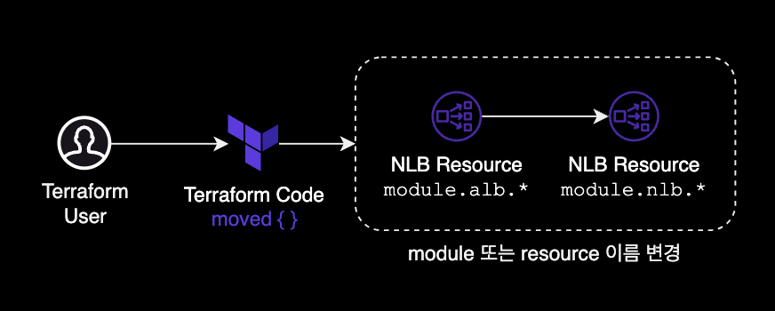
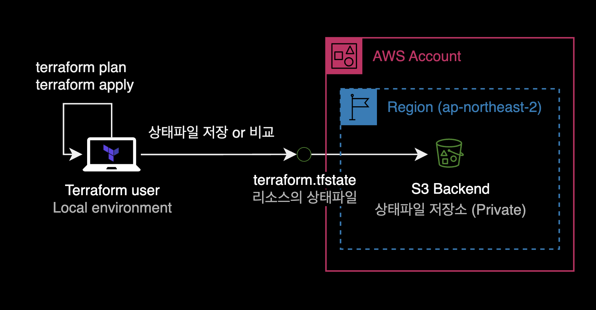

Terraform moved Block
개요
기존에 테라폼을 사용해서 생성한 module 혹은 resource의 이름(Resource ID)을 리소스 재생성recreate 없이 변경하는 방법을 가이드하는 문서입니다.
이 글에서는 terraform state mv 명령어가 아닌 moved {} 블록을 사용해서 문제를 해결합니다.
배경지식
moved {} 블록
terraform의 moved 블록은 Terraform v1.1 이상에서 사용 가능한 기능으로, 리소스 혹은 모듈을 이동하거나 이름을 변경할 때 사용됩니다.
Terraform으로 이미 생성한 리소스에 대해 다른 이름으로 변경하고 싶을 경우, 리소스 블록에서 a에서 b로 이름을 변경하고, moved {} 블록 내에 변경할 이름을 기록할 수 있습니다.
resource "aws_instance" "b" {
count = 2
# (resource-type-specific configuration)
}
moved {
from = aws_instance.a
to = aws_instance.b
}
이 기능을 사용하면 Terraform 구성 파일 내에서 리소스를 새 위치로 이동시키거나 구성을 변경할 수 있습니다.
moved 블록의 등장배경과 장점
기존 리소스 이름, 상태를 바꾸는 명령 조차도 CLI 대신 HCLHashicorp Configuration Language 코드로 선언하여, 상태를 바꾸는 행위 자체도 코드화할 수 있다는 것이 moved {} 블록이 가진 장점입니다.
테라폼 공식 발표 Announcing Terraform 1.1 with Improved Refactoring Capabilities and Enhanced Cloud Experience에서는 moved {} 블록이 등장한 배경에 대해 크게 3가지를 언급했습니다.
terraform state mv가 가진 3가지 문제점
- Risky and error prone
- Terraform Cloud users couldn’t refactor within core workflows
- Module authors couldn’t coordinate changes themselves
제약사항
moved {} 블록은 Terraform v1.1 이상부터만 지원합니다.
Terraform 버전이 v1.1 이하이거나 복잡한 리팩토링 작업이 필요한 경우는 moved {} 블록 대신 terraform state mv 명령어을 사용하도록 합니다.
terrafrom state mv SOURCE DESTINATION
# Example: rename a resource
terraform state mv packet_device.worker packet_device.helper
환경
로컬 환경
- OS : macOS 13.5 (M1 Max)
- Shell : zsh + oh-my-zsh
- Terraform : v1.5.4
- Provider : AWS Provider 4.59.0
사용방법
현재 시나리오에서 테라폼 모듈의 디렉토리 구조는 다음과 같습니다.
$ tree nlb/
nlb/
└── internet-facing
├── backend.tf
├── main.tf
├── output.tf
├── variables.tf
└── versions.tf
위 5개의 .tf 코드가 모여 하나의 NLB를 생성하고 있습니다.
해당 NLB는 테라폼의 resource가 아닌 AWS에서 제공하는 공식 ALB 모듈을 사용해서 생성했습니다.
NLB main 디렉토리 안으로 이동한 후, 사용중인 terraform providers 정보를 확인합니다.
$ cd /nlb/internet-facing/
$ terraform providers
Providers required by configuration:
.
├── provider[registry.terraform.io/hashicorp/aws] >= 4.59.0
├── provider[registry.terraform.io/hashicorp/null] >= 2.0.0
└── module.nlb
└── provider[registry.terraform.io/hashicorp/aws] >= 4.59.0
Providers required by state:
provider[registry.terraform.io/hashicorp/aws]
기존에 AWS Provider v4.59.0를 사용해서 생성한 걸 알 수 있습니다.
NLB 모듈의 이름이 선언된 main.tf 파일의 일부 내용입니다.
# main.tf
# We need to change module "alb" to module "nlb"
module "alb" {
source = "git::https://github.doge.com/doge-company/terraform-modules.git//aws/alb"
name = local.name
load_balancer_type = "network"
internal = false
vpc_id = local.vpc_id
subnets = [
data.aws_subnet.public_a.id,
data.aws_subnet.public_c.id
]
# ...
}
제 경우 실제로는 NLB 리소스를 생성하는 코드인데 module 이름이 "alb"로 되어 있는 게 문제였습니다.
기존에 테라폼으로 생성한 리소스를 삭제하고 다시 만들 필요 없이, module 이름만 alb를 nlb로 변경하고 싶었습니다.

module 이름 변경
가장 먼저 NLB를 생성하는 메인코드 main.tf에서 module 이름을 원하는 이름으로 변경합니다.
- module "alb" {
+ module "nlb" {
# ...
}
참고로 기존에 생성한 NLB에 대한 Terraform 상태파일은 모두 S3 백엔드 버킷에 저장되어 있습니다.

상태파일의 백엔드에 대한 설정은 backend.tf 코드에 아래와 같이 선언되어 있습니다.
# backend.tf
terraform {
backend "s3" {
encrypt = true
region = "ap-northeast-2"
bucket = "dogecompany-terraform-state-devops"
key = "doge/apne2/doge-server/nlb/internet-facing/terraform.tfstate"
}
}
$ terraform state list
data.aws_ec2_managed_prefix_list.jira_cloud
data.aws_subnet.public_a
data.aws_subnet.public_c
module.alb.aws_lb.this[0]
module.alb.aws_lb_listener.frontend_http_tcp[0]
module.alb.aws_lb_listener.frontend_http_tcp[1]
module.alb.aws_lb_listener.frontend_http_tcp[2]
module.alb.aws_lb_target_group.main[0]
module.alb.aws_lb_target_group.main[1]
module.alb.aws_lb_target_group.main[2]
module.alb.aws_lb_target_group_attachment.this["0.ghe_primary"]
module.alb.aws_lb_target_group_attachment.this["1.ghe_primary"]
module.alb.aws_lb_target_group_attachment.this["2.ghe_primary"]
module.alb.*를 module.nlb.*로 변경해야 하는 것이 제 현재 목표입니다.
기존 main.tf 코드에서 모듈이름 module "alb"를 module "nlb"로 변경했습니다.
# main.tf
module "nlb" {
source = "git::https://github.doge.com/doge-company/terraform-modules.git//aws/alb"
name = local.name
load_balancer_type = "network"
internal = false
vpc_id = local.vpc_id
subnets = [
data.aws_subnet.public_a.id,
data.aws_subnet.public_c.id
]
# ...
}
moved 블록 선언
그 다음 moved {} 블럭을 main.tf 코드에 새롭게 추가합니다.
# main.tf
module "nlb" {
source = "git::https://github.doge.com/doge-company/terraform-modules.git//aws/alb"
name = local.name
load_balancer_type = "network"
internal = false
vpc_id = local.vpc_id
subnets = [
data.aws_subnet.public_a.id,
data.aws_subnet.public_c.id
]
# ...
}
+ moved {
+ from = module.alb # 기존 module 이름
+ to = module.nlb # 변경할 module 이름
+ }
main.tf 코드에 moved {} 블럭을 추가한 결과입니다.
# main.tf
module "nlb" {
source = "git::https://github.doge.com/doge-company/terraform-modules.git//aws/alb"
name = local.name
load_balancer_type = "network"
internal = false
vpc_id = local.vpc_id
subnets = [
data.aws_subnet.public_a.id,
data.aws_subnet.public_c.id
]
# ...
}
# 새로 추가한 moved 블럭
moved {
from = module.alb # 기존 module 이름
to = module.nlb # 변경할 module 이름
}
terraform apply를 하면 moved {} 블록은 이미 생성되어 있는 module의 기존 이름 alb를 nlb로 변경하는 작업을 수행하게 됩니다.
plan
이후 terraform plan을 돌려서 리소스의 변경사항을 미리 확인합니다.
$ terraform plan
data.aws_subnet.public_c: Reading...
data.aws_ec2_managed_prefix_list.jira_cloud: Reading...
data.aws_subnet.public_a: Reading...
module.nlb.aws_lb_target_group.main[1]: Refreshing state... [id=arn:aws:elasticloadbalancing:ap-northeast-2:111122223333:targetgroup/https-20230809060305165300000002/469c12d66ae53716]
module.nlb.aws_lb_target_group.main[0]: Refreshing state... [id=arn:aws:elasticloadbalancing:ap-northeast-2:111122223333:targetgroup/https-20230809060305165300000001/a85e7b6195c0e180]
module.nlb.aws_lb_target_group.main[2]: Refreshing state... [id=arn:aws:elasticloadbalancing:ap-northeast-2:111122223333:targetgroup/user-20230809061330863200000001/52641bd2a68b265a]
module.nlb.aws_lb_target_group_attachment.this["0.ghe_primary"]: Refreshing state... [id=arn:aws:elasticloadbalancing:ap-northeast-2:111122223333:targetgroup/https-20230809060305165300000001/a85e7b6195c0e180-20230809060358861800000001]
module.nlb.aws_lb_target_group_attachment.this["2.ghe_primary"]: Refreshing state... [id=arn:aws:elasticloadbalancing:ap-northeast-2:111122223333:targetgroup/user-20230809061330863200000001/52641bd2a68b265a-20230809061358959300000001]
module.nlb.aws_lb_target_group_attachment.this["1.ghe_primary"]: Refreshing state... [id=arn:aws:elasticloadbalancing:ap-northeast-2:111122223333:targetgroup/https-20230809060305165300000002/469c12d66ae53716-20230809060358952300000002]
data.aws_subnet.public_c: Read complete after 1s [id=subnet-xxxxxsubnetxxxxxx]
data.aws_subnet.public_a: Read complete after 1s [id=subnet-yyyyysubnetyyyyyy]
module.nlb.aws_lb.this[0]: Refreshing state... [id=arn:aws:elasticloadbalancing:ap-northeast-2:111122223333:loadbalancer/net/doge-api-public-nlb/1fbec21ba0f60c88]
module.nlb.aws_lb_listener.frontend_http_tcp[0]: Refreshing state... [id=arn:aws:elasticloadbalancing:ap-northeast-2:111122223333:listener/net/doge-api-public-nlb/1fbec21ba0f60c88/dfac473dc3c9a126]
module.nlb.aws_lb_listener.frontend_http_tcp[2]: Refreshing state... [id=arn:aws:elasticloadbalancing:ap-northeast-2:111122223333:listener/net/doge-api-public-nlb/1fbec21ba0f60c88/fe50ecca7ff4e974]
module.nlb.aws_lb_listener.frontend_http_tcp[1]: Refreshing state... [id=arn:aws:elasticloadbalancing:ap-northeast-2:111122223333:listener/net/doge-api-public-nlb/1fbec21ba0f60c88/0c8b7068a8658810]
data.aws_ec2_managed_prefix_list.jira_cloud: Read complete after 1s [id=pl-0badad04d863107b3]
Terraform will perform the following actions:
# module.alb.aws_lb.this[0] has moved to module.nlb.aws_lb.this[0]
resource "aws_lb" "this" {
id = "arn:aws:elasticloadbalancing:ap-northeast-2:111122223333:loadbalancer/net/doge-api-public-nlb/1fbec21ba0f60c88"
name = "doge-api-public-nlb"
tags = {
"ManagedBy" = "terraform"
}
# (13 unchanged attributes hidden)
# (4 unchanged blocks hidden)
}
# module.alb.aws_lb_listener.frontend_http_tcp[0] has moved to module.nlb.aws_lb_listener.frontend_http_tcp[0]
resource "aws_lb_listener" "frontend_http_tcp" {
id = "arn:aws:elasticloadbalancing:ap-northeast-2:111122223333:listener/net/doge-api-public-nlb/1fbec21ba0f60c88/dfac473dc3c9a126"
tags = {
"ManagedBy" = "terraform"
}
# (5 unchanged attributes hidden)
# (1 unchanged block hidden)
}
# module.alb.aws_lb_listener.frontend_http_tcp[1] has moved to module.nlb.aws_lb_listener.frontend_http_tcp[1]
resource "aws_lb_listener" "frontend_http_tcp" {
id = "arn:aws:elasticloadbalancing:ap-northeast-2:111122223333:listener/net/doge-api-public-nlb/1fbec21ba0f60c88/0c8b7068a8658810"
tags = {
"ManagedBy" = "terraform"
}
# (5 unchanged attributes hidden)
# (1 unchanged block hidden)
}
# module.alb.aws_lb_listener.frontend_http_tcp[2] has moved to module.nlb.aws_lb_listener.frontend_http_tcp[2]
resource "aws_lb_listener" "frontend_http_tcp" {
id = "arn:aws:elasticloadbalancing:ap-northeast-2:111122223333:listener/net/doge-api-public-nlb/1fbec21ba0f60c88/fe50ecca7ff4e974"
tags = {
"ManagedBy" = "terraform"
}
# (5 unchanged attributes hidden)
# (1 unchanged block hidden)
}
# module.alb.aws_lb_target_group.main[0] has moved to module.nlb.aws_lb_target_group.main[0]
resource "aws_lb_target_group" "main" {
id = "arn:aws:elasticloadbalancing:ap-northeast-2:111122223333:targetgroup/https-20230809060305165300000001/a85e7b6195c0e180"
name = "https-20230809060305165300000001"
tags = {
"ManagedBy" = "terraform"
}
# (16 unchanged attributes hidden)
# (3 unchanged blocks hidden)
}
# module.alb.aws_lb_target_group.main[1] has moved to module.nlb.aws_lb_target_group.main[1]
resource "aws_lb_target_group" "main" {
id = "arn:aws:elasticloadbalancing:ap-northeast-2:111122223333:targetgroup/https-20230809060305165300000002/469c12d66ae53716"
name = "https-20230809060305165300000002"
tags = {
"ManagedBy" = "terraform"
}
# (16 unchanged attributes hidden)
# (3 unchanged blocks hidden)
}
# module.alb.aws_lb_target_group.main[2] has moved to module.nlb.aws_lb_target_group.main[2]
resource "aws_lb_target_group" "main" {
id = "arn:aws:elasticloadbalancing:ap-northeast-2:111122223333:targetgroup/user-20230809061330863200000001/52641bd2a68b265a"
name = "user-20230809061330863200000001"
tags = {
"ManagedBy" = "terraform"
}
# (16 unchanged attributes hidden)
# (3 unchanged blocks hidden)
}
# module.alb.aws_lb_target_group_attachment.this["0.ghe_primary"] has moved to module.nlb.aws_lb_target_group_attachment.this["0.ghe_primary"]
resource "aws_lb_target_group_attachment" "this" {
id = "arn:aws:elasticloadbalancing:ap-northeast-2:111122223333:targetgroup/https-20230809060305165300000001/a85e7b6195c0e180-20230809060358861800000001"
# (3 unchanged attributes hidden)
}
# module.alb.aws_lb_target_group_attachment.this["1.ghe_primary"] has moved to module.nlb.aws_lb_target_group_attachment.this["1.ghe_primary"]
resource "aws_lb_target_group_attachment" "this" {
id = "arn:aws:elasticloadbalancing:ap-northeast-2:111122223333:targetgroup/https-20230809060305165300000002/469c12d66ae53716-20230809060358952300000002"
# (3 unchanged attributes hidden)
}
# module.alb.aws_lb_target_group_attachment.this["2.ghe_primary"] has moved to module.nlb.aws_lb_target_group_attachment.this["2.ghe_primary"]
resource "aws_lb_target_group_attachment" "this" {
id = "arn:aws:elasticloadbalancing:ap-northeast-2:111122223333:targetgroup/user-20230809061330863200000001/52641bd2a68b265a-20230809061358959300000001"
# (3 unchanged attributes hidden)
}
Plan: 0 to add, 0 to change, 0 to destroy.
───────────────────────────────────────────────────────────────────────────────────────────────────────────────────────────────────────────────────────────
Note: You didn't use the -out option to save this plan, so Terraform can't guarantee to take exactly these actions if you run "terraform apply" now.
apply
terraform apply로 모듈 이름만 바뀌는 변경사항을 적용합니다.
$ terraform apply
...
# module.alb.aws_lb_target_group_attachment.this["0.ghe_primary"] has moved to module.nlb.aws_lb_target_group_attachment.this["0.ghe_primary"]
resource "aws_lb_target_group_attachment" "this" {
id = "arn:aws:elasticloadbalancing:ap-northeast-2:111122223333:targetgroup/https-20230809060305165300000001/a85e7b6195c0e180-20230809060358861800000001"
# (3 unchanged attributes hidden)
}
# module.alb.aws_lb_target_group_attachment.this["1.ghe_primary"] has moved to module.nlb.aws_lb_target_group_attachment.this["1.ghe_primary"]
resource "aws_lb_target_group_attachment" "this" {
id = "arn:aws:elasticloadbalancing:ap-northeast-2:111122223333:targetgroup/https-20230809060305165300000002/469c12d66ae53716-20230809060358952300000002"
# (3 unchanged attributes hidden)
}
# module.alb.aws_lb_target_group_attachment.this["2.ghe_primary"] has moved to module.nlb.aws_lb_target_group_attachment.this["2.ghe_primary"]
resource "aws_lb_target_group_attachment" "this" {
id = "arn:aws:elasticloadbalancing:ap-northeast-2:111122223333:targetgroup/user-20230809061330863200000001/52641bd2a68b265a-20230809061358959300000001"
# (3 unchanged attributes hidden)
}
Plan: 0 to add, 0 to change, 0 to destroy.
Do you want to perform these actions?
Terraform will perform the actions described above.
Only 'yes' will be accepted to approve.
apply 실행 전 결과를 확인해보니 생성, 변경, 삭제되는 리소스가 하나도 없습니다.
Plan: 0 to add, 0 to change, 0 to destroy.
module의 이름만 alb에서 nlb로 그대로 변경될 뿐 리소스의 변동사항은 전혀 없다는 점을 확인했습니다.
실행 여부를 묻는 프롬프트에서 yes를 입력해 실제 리소스에 변경사항을 반영합니다.
$ terraform apply
...
# module.alb.aws_lb_target_group_attachment.this["0.ghe_primary"] has moved to module.nlb.aws_lb_target_group_attachment.this["0.ghe_primary"]
resource "aws_lb_target_group_attachment" "this" {
id = "arn:aws:elasticloadbalancing:ap-northeast-2:111122223333:targetgroup/https-20230809060305165300000001/a85e7b6195c0e180-20230809060358861800000001"
# (3 unchanged attributes hidden)
}
# module.alb.aws_lb_target_group_attachment.this["1.ghe_primary"] has moved to module.nlb.aws_lb_target_group_attachment.this["1.ghe_primary"]
resource "aws_lb_target_group_attachment" "this" {
id = "arn:aws:elasticloadbalancing:ap-northeast-2:111122223333:targetgroup/https-20230809060305165300000002/469c12d66ae53716-20230809060358952300000002"
# (3 unchanged attributes hidden)
}
# module.alb.aws_lb_target_group_attachment.this["2.ghe_primary"] has moved to module.nlb.aws_lb_target_group_attachment.this["2.ghe_primary"]
resource "aws_lb_target_group_attachment" "this" {
id = "arn:aws:elasticloadbalancing:ap-northeast-2:111122223333:targetgroup/user-20230809061330863200000001/52641bd2a68b265a-20230809061358959300000001"
# (3 unchanged attributes hidden)
}
Plan: 0 to add, 0 to change, 0 to destroy.
Do you want to perform these actions?
Terraform will perform the actions described above.
Only 'yes' will be accepted to approve.
Enter a value: yes
Apply complete! Resources: 0 added, 0 changed, 0 destroyed.
Outputs:
...
Apply complete!가 되었고 생성, 변경, 삭제된 리소스는 하나도 없다는 걸 확인할 수 있습니다.
이제 다시 Terraform 상태파일의 목록을 확인합니다.
$ terraform state list
data.aws_ec2_managed_prefix_list.jira_cloud
data.aws_subnet.public_a
data.aws_subnet.public_c
module.nlb.aws_lb.this[0]
module.nlb.aws_lb_listener.frontend_http_tcp[0]
module.nlb.aws_lb_listener.frontend_http_tcp[1]
module.nlb.aws_lb_listener.frontend_http_tcp[2]
module.nlb.aws_lb_target_group.main[0]
module.nlb.aws_lb_target_group.main[1]
module.nlb.aws_lb_target_group.main[2]
module.nlb.aws_lb_target_group_attachment.this["0.ghe_primary"]
module.nlb.aws_lb_target_group_attachment.this["1.ghe_primary"]
module.nlb.aws_lb_target_group_attachment.this["2.ghe_primary"]
저희가 의도한대로 module.alb 이름이 module.nlb로 정상 변경되었습니다.
작업 종료.